Your browser doesn't support the features required by impress.js, so you are presented with a simplified version of this presentation.
For the best experience please use the latest Chrome, Safari or Firefox browser.
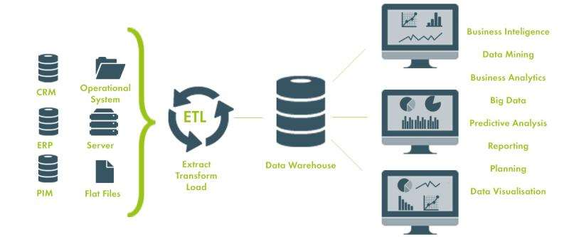
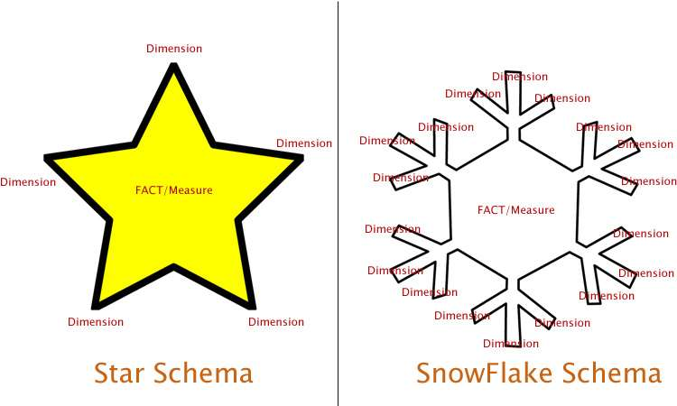
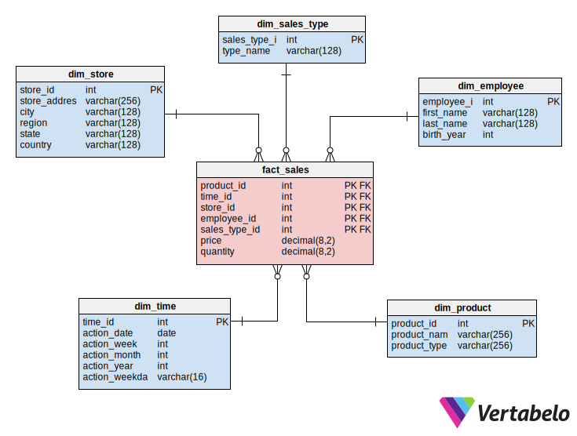
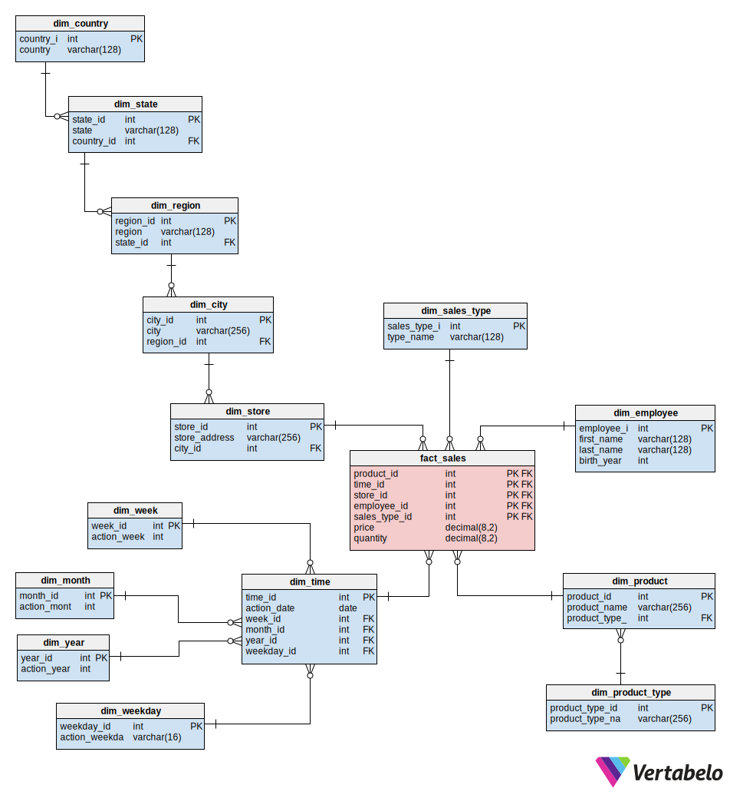
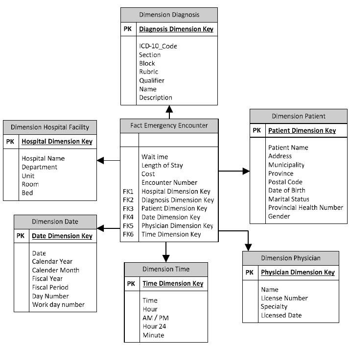
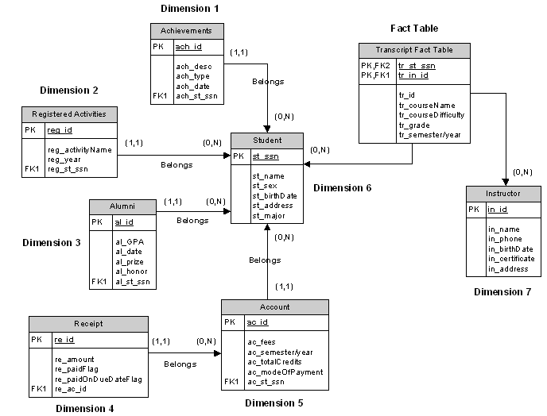
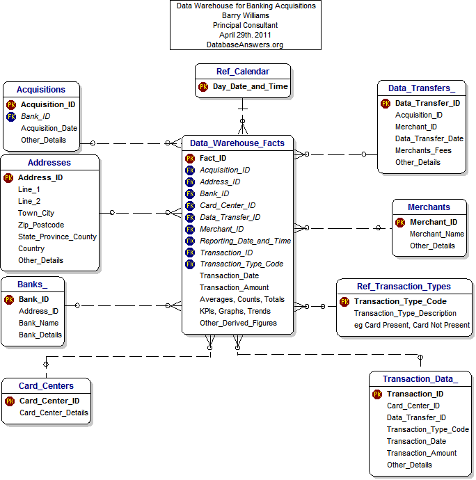
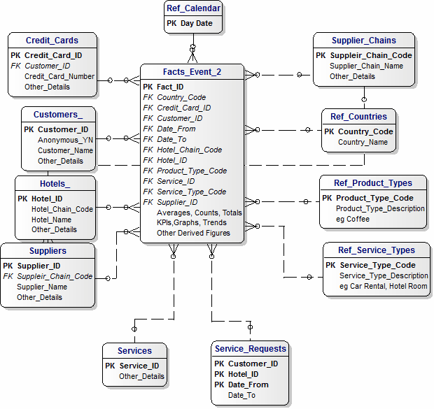
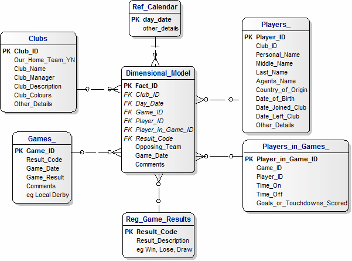
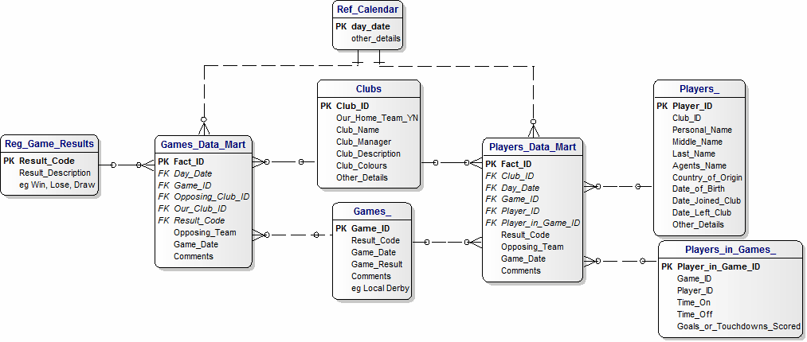
Bill Inmon vs. Ralph Kimball
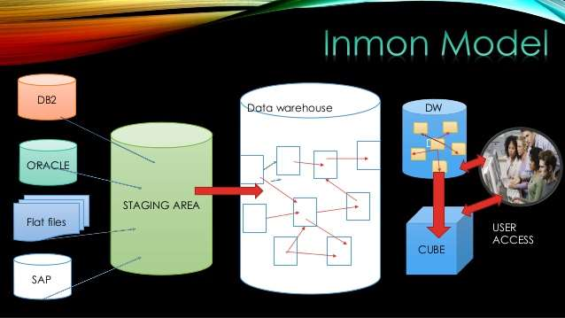
Inmon Approach
Advantages:
• Single source of truth for the enterprise and all data warehouse is integrated.
• The business processes can be understood easily
• Easy to update the data warehouse as one thing is in only one place.
• Can handle varied reporting needs across the enterprise.
Disadvantages:
• Can become complex over time as it involves more tables and joins.
• Need experts in data modeling and of the business itself.
• The initial set-up and delivery will take more time, and management needs to be
aware of this.
• More ETL work is needed as the data marts are built from the data warehouse.
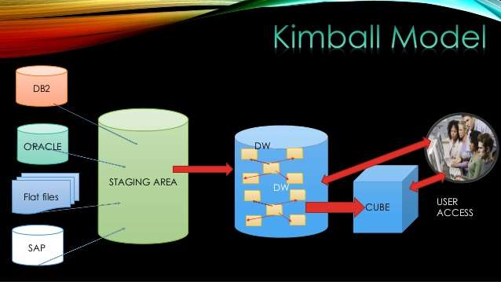
Kimball Approach
Advantages:
• Quick to set-up and build
• Data warehousing environment is small
• A small team of developers and architects is enough to keep the data
warehouse
• Works really well for department-wise metrics
Disadvantages:
• ‘One source of truth’ is lost
• Redundant data can cause data update anomalies over time
• Dimensional model hard to change as the business requirements change
• Cannot handle all the enterprise reporting needs because the model is
oriented towards business processes rather than the enterprise as a whole
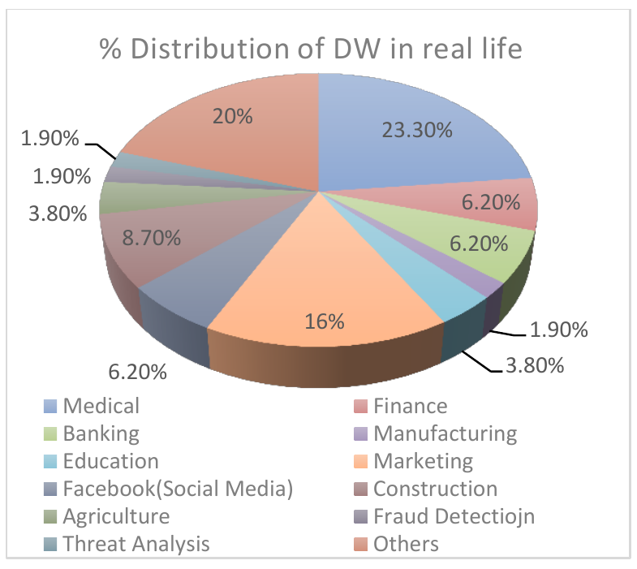